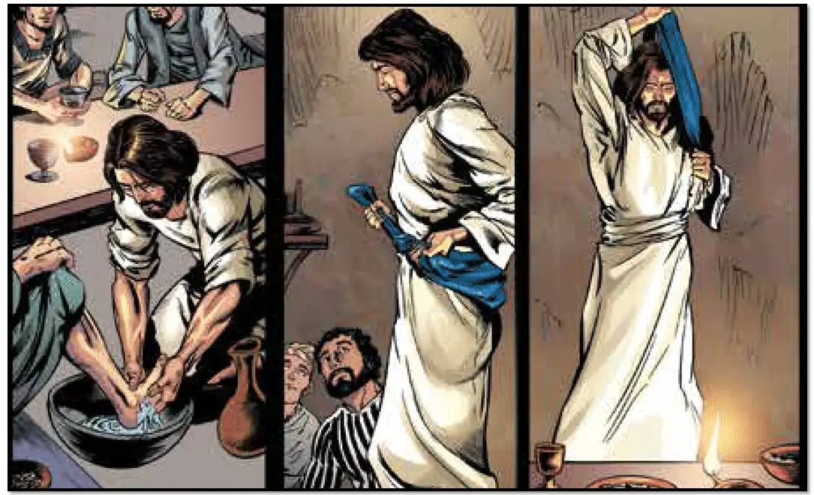
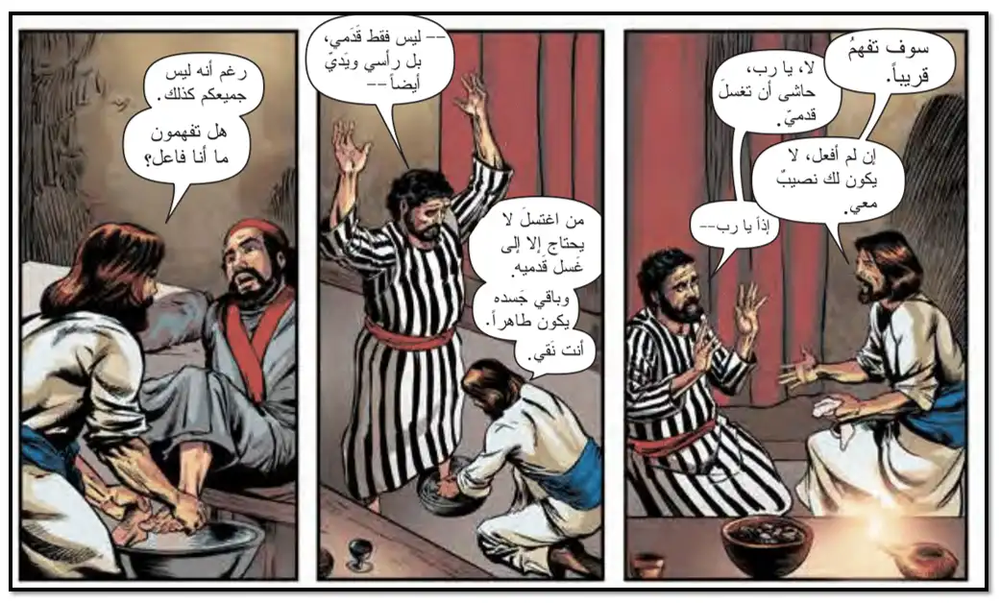
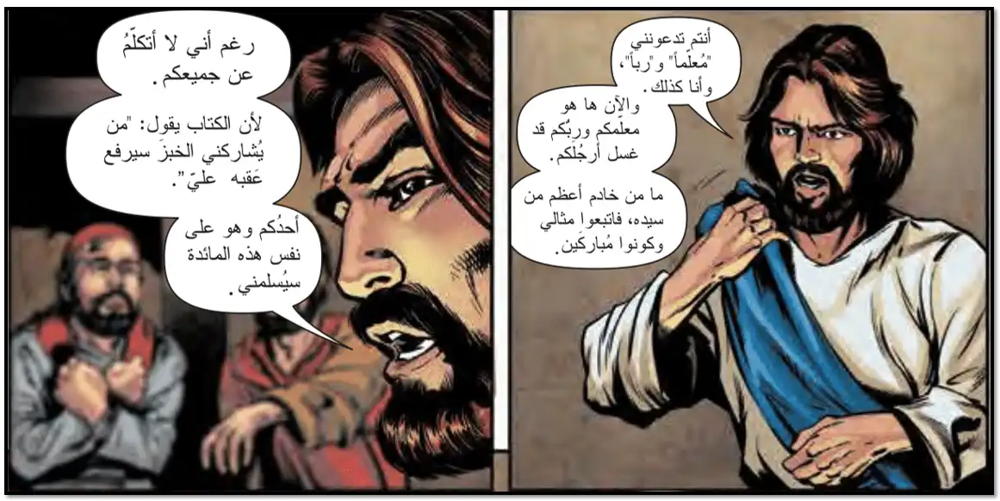

|
وقَبْلَ عِيدِ الفِصْحِ، إِذْ رَأَى يسوعُ أَنَّ سَاعَتَهُ قَدْ جَاءَتْ، لكي يَنْتَقِلَ مِنْ هَذَا العَالَمِ ذاهبًا إِلَى الآبِ، وقَدْ أحَبَّ خَاصَّتَهُ الَّذِينَ فِي العَالَمِ، أَحَبَّهُمْ إِلَى النهايةِ. فَلمَّا كَانَ العَشَاءُ، وَكَانَ الشّيطانُ قَدْ فَرَغَ مِمَّا يُلقِي فِي قَلبِ المُزمِعِ أَنْ يُسلِّمَهُ وَهُوَ يَهوذا سِمْعَانُ الْإِسْخَريوطِيُّ.
وإذْ رأَى يسوعُ أَنَّ الآبَ قَدْ دَفَعَ كُلَّ شيءٍ إِلَى يَدَيْهِ، وَأَنَّهُ مِنْ عِندِ اللَّهِ خَرَجَ، وَإِلَى اللَّهِ يَمْضِيِ،

قَامَ عَنِ العَشاءِ، وخَلَعَ ثِيَابَهُ، وَأَخَذَ مِنديلًا واتَّزَرَ بهِ. ثُمَّ صَبَّ ماءً فِي مِغْسَلٍ، وَابتَدَأَ يَغْسِلُ أَرْجُلَ تلَاميذِهِ ويَمْسَحُها بالمِنديلِ الَّذِي كَانَ مُتَّزِرًا بِهِ.

فَجَاءَ إِلَى سِمْعانَ بُطْرُسَ ليِغسلَ رجلَيْهِ. فقالَ لَهُ بطرسُ:
"يَا رَبُّ، أَتَغْسِلُ رِجْلَيَّ!"
أجَابَ يَسوعُ وقالَ لَهُ:
"إِنَّ الَّذِي أصنعُهُ أَنَا، لَا تعرفُهُ أَنْتَ الآنَ، ولكِنَّكَ سَتَعْرِفَهُ بعدَ ذَلِكَ".
قَالَ لَهُ بُطْرُسُ:
"لَنْ تَغْسِلَ رِجْلَيَّ أَبَدًا!"
أجابَ يسوعُ:
"الحقَّ الحقَّ أقولُ لكَ: إِنْ لَمْ أغسِلْ رجليْكَ فليْسَ لكَ مَعِي نَصِيبٌ".
قَالَ لَهُ سِمعان بُطرُسُ:
"يَا رَبُّ، لَيسَ رِجْلَيَّ فَقَطْ بَلْ يَديَّ أَيْضًا وَرَأسِي".
قَالَ لَهُ يَسوعُ:
"إِنَّ الَّذِي قَدِ اغْتَسَلَ لَيسَ لَهُ حَاجَةٌ إِلَّا إِلَى غَسْلِ رِجْلَيْهِ، بَلْ هُوَ طَاهِرٌ كُلُّهُ وَأَنْتُمْ أَيْضًا طَاهِرُونَ ولكِنْ لَيسَ كُلُّكُمْ"
؛ لِأَنَّهُ كَانَ عَارِفًا بالمُزمِعِ أَنْ يُسلِّمَهُ، لِذَلِكَ قَالَ:
"لَسْتُمْ كُلُّكُمْ طَاهِرِينَ".

فَلَمَّا غَسَلَ أَرْجُلَهُمْ أَخَذَ ثِيَابَهُ وإذِ اتَّكَأَ أَيْضًا، قَالَ لَهُمْ:
"أَتَفْهَمُونَ مَا قَدْ صَنَعْتُهُ بِكُمْ؟ أَنْتُمْ تَدْعُونَنِي المُعَلِّمَ والرَّبَّ، وَحَسَنًا تَقولونَ؛ لِأَنِّي أَنَا هَكَذَا. فَإِنْ كُنْتُ وَأَنَا ربُّكُم ومُعَلِّمُكُمْ قَدْ غَسَلْتُ أَرْجُلَكُمْ، فَأَنْتُمْ أَيْضًا يَجِبُ أَنْ يَغْسِلَ بَعْضُكُمْ أَرْجُلَ بَعْضٍ؛ لِأَنَّ مَا صنعتُهُ لَكُمْ هُوَ مِثالٌ، حَتَّى كَمَا صَنَعْتُ أَنَا بِكُمْ تَصْنَعُونَ أَنْتُمْ أَيْضًا بعضُكُمْ ببعضٍ.
الحَقَّ الحَقَّ أقولُ لَكُمْ: لَيسَ عَبْدٌ أَعْظَمَ مِنْ سَيِّدِهِ، وَلَا رَسُولٌ أَعْظَمَ مِنْ مُرْسِلِهِ. فَإِنْ عَلِمْتُمْ هَذَا فَطُوبَاكُمْ إِنْ عَمِلْتُمُوهُ".
|